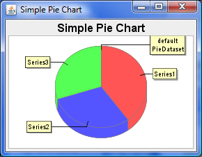

These examples and many more are available as Groovy scripts in the source package that is included with any download. They are in the test directory.
import com.thecoderscorner.groovychart.chart.ChartBuilder
import groovy.swing.SwingBuilder
import java.awt.BorderLayout
import java.awt.Dimension
import org.jfree.chart.ChartPanel
import org.jfree.chart.plot.PlotOrientation
import java.awt.Color
import java.awt.BasicStroke
import org.jfree.chart.JFreeChart
import org.jfree.chart.plot.DatasetRenderingOrder
/*
* Donated to the project by cal4me.com, this is for entertainment purposes only. It shows the default BMI calculation
* over a range of weights and heights.
*/
ChartBuilder builder = new ChartBuilder();
def areachart = builder.xyareachart(title:'BMI Index Graph',
orientation:PlotOrientation.VERTICAL,
legend:true,
tooltips:false,
XAxisLabel: 'weight (Kg)',
YAxisLabel: 'height (m)',
urls:false
) {
xyseries {
for(int weight = 0; weight < 150; weight += 10) {
point('Overweight', x: weight, y: Math.sqrt(weight / 35.0))
point('Normal', x: weight, y: Math.sqrt(weight / 25.0))
point('Underweight', x: weight, y: Math.sqrt(weight / 18.0))
}
}
xyplot {
datasetRenderingOrder DatasetRenderingOrder.FORWARD
foregroundAlpha 1.0f
rangeGridlinePaint Color.BLACK
domainGridlinePaint Color.BLACK
domainaxis {
lowerBound 30
upperBound 135
}
rangeaxis {
lowerBound 0.75
}
xyitemrenderer {
outlinePaint(Color.BLACK)
outlineStroke(new BasicStroke())
seriesPaint(0, paint: new Color(0xff, 0, 0))
seriesPaint(1, paint: new Color(255,255,50))
seriesPaint(2, paint: new Color(0xff, 0x66, 0x33))
}
}
}
def chartPanel = new ChartPanel((JFreeChart)areachart.chart, false);
chartPanel.setPreferredSize(new Dimension(1000, 500));
chartPanel.setMouseZoomable(true, false);
SwingBuilder swing = new SwingBuilder();
def frame = swing.frame(
title:'This is a Frame',
location:[100,100],
size:[800,400],
defaultCloseOperation:javax.swing.WindowConstants.EXIT_ON_CLOSE);
frame.getContentPane().setLayout(new BorderLayout());
frame.getContentPane().add( chartPanel, java.awt.BorderLayout.CENTER);
frame.setVisible(true)

Source for a simple pie chart
import com.thecoderscorner.groovychart.chart.ChartBuilder
import groovy.swing.SwingBuilder
import java.awt.BorderLayout as BL
import javax.swing.JFrame
import java.awt.Color
import java.awt.Dimension
import org.jfree.chart.ChartPanel
ChartBuilder cb = new ChartBuilder();
def pieChart = cb.piechart3d(title: "Simple Pie Chart") {
defaultPieDataset {
Series1(40.0f)
Series2(30.0f)
Series3(30.0f)
}
antiAlias = true
backgroundPaint(Color.WHITE)
}
def sb = new SwingBuilder()
def fr = sb.frame( title : 'Simple Pie Chart', size:[600, 400],
defaultCloseOperation: JFrame.EXIT_ON_CLOSE) {
widget(new ChartPanel(pieChart.chart), constraints: BL.CENTER)
}
fr.pack();
fr.show();
